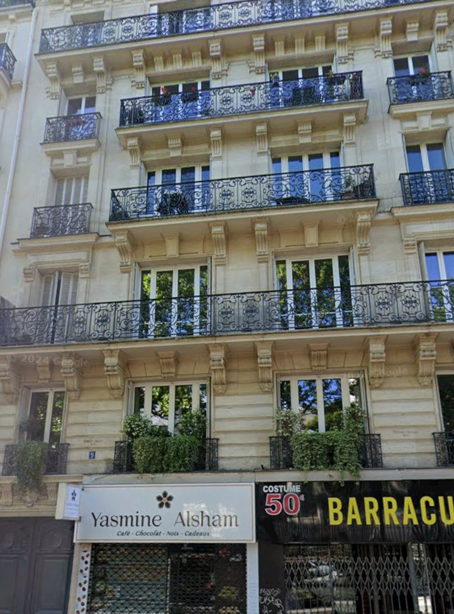
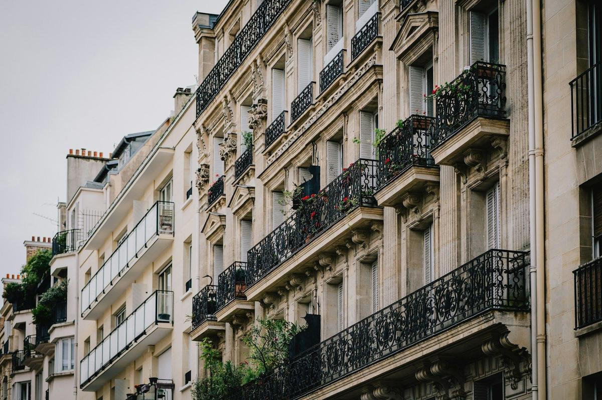
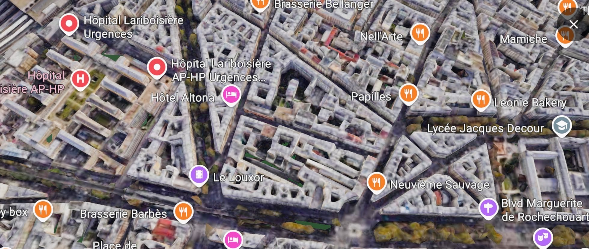
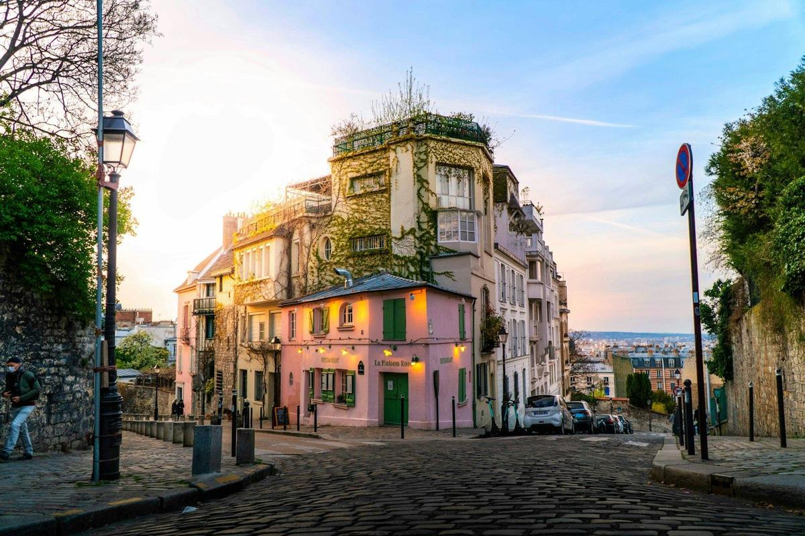
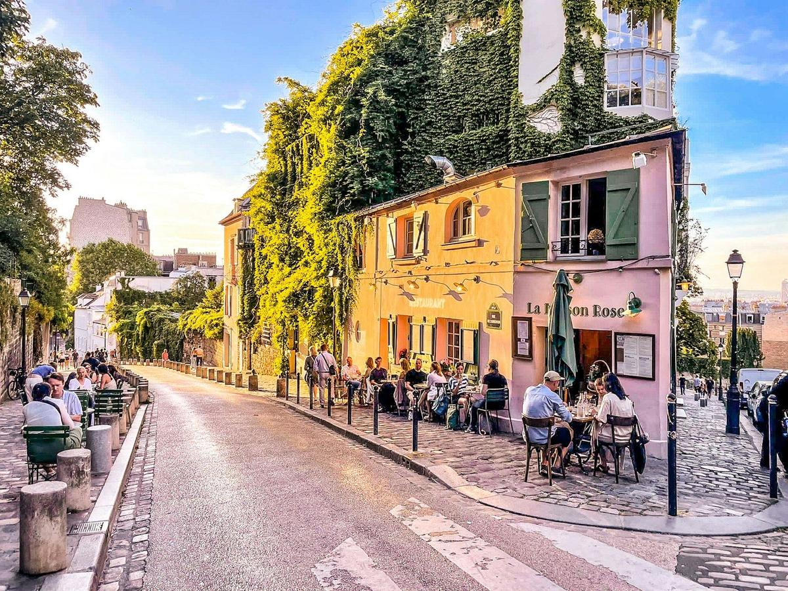

<title>Avis de valeur · 9 bd Marguerite de Rochechouart</title>
<link rel="preconnect" href="https://fonts.googleapis.com">
<link rel="preconnect" href="https://fonts.gstatic.com" crossorigin>
<link href="https://fonts.googleapis.com/css2?family=Montserrat:ital,wght@0,400;0,500;0,600;0,700;0,800;1,400&family=EB+Garamond:ital,wght@0,400;0,500;1,400;1,500&display=swap" rel="stylesheet">
<style>
  :root{
    --orange:#E09A3C;
    --orange-deep:#9A6420;
    --ink:#1F2A36;
    --body:#4E5964;
    --muted:#98A0A8;
    --line:#E4E1DB;
    --bg:#F2F1EE;
    --card:#FFFFFF;
    --panel:#FAF8F4;
    --good:#2E7D4F;
    --warn:#B3541E;
  }
  *{box-sizing:border-box}
  html{background:var(--bg)}
  body{
    margin:0; background:var(--bg); color:var(--body);
    font-family:'Montserrat','Segoe UI',Arial,sans-serif; font-size:13px; line-height:1.55;
    display:flex; flex-direction:column; align-items:center; gap:26px; padding:26px 12px 60px;
    -webkit-font-smoothing:antialiased;
  }
  .slide{
    width:1280px; max-width:100%; aspect-ratio:16/9; background:var(--card);
    border:1px solid var(--line); padding:48px 56px 30px; position:relative;
    display:flex; flex-direction:column; overflow:hidden;
  }
  .logo{position:absolute; top:42px; right:56px; text-align:right; z-index:3}
  .logo .name{font-size:19px; letter-spacing:.22em; color:var(--ink); font-weight:500}
  .logo .name em{font-style:normal; color:var(--orange)}
  .logo .sub{font-size:8.5px; letter-spacing:.34em; color:var(--muted); margin-top:3px}
  .eyebrow{color:var(--orange-deep); font-size:11px; font-weight:700; letter-spacing:.18em; text-transform:uppercase; margin:0 0 8px}
  h1{font-weight:500; font-size:31px; line-height:1.12; color:var(--ink); margin:0 0 6px; letter-spacing:-.01em; text-wrap:balance}
  .lede{font-family:'EB Garamond',Georgia,serif; font-style:italic; font-size:17px; color:var(--body); margin:0 0 14px; max-width:70ch}
  .rule{height:3px; background:var(--line); position:relative; margin:10px 0 18px}
  .rule i{position:absolute; left:0; top:0; width:44px; height:3px; background:var(--orange)}
  .foot{margin-top:auto; display:flex; justify-content:space-between; align-items:flex-end; gap:24px; padding-top:12px}
  .foot .doc{font-size:9.5px; letter-spacing:.14em; color:var(--muted); text-transform:uppercase}
  .foot .pg{font-size:11px; color:var(--muted)}
  .note{font-size:10.5px; line-height:1.5; color:var(--muted); margin-top:10px}
  p{margin:0 0 10px; max-width:78ch}
  .cols{display:grid; gap:26px}
  .c2{grid-template-columns:1fr 1fr}
  .c3{grid-template-columns:repeat(3,1fr)}
  .c21{grid-template-columns:1.2fr .8fr}
  .c12{grid-template-columns:.8fr 1.2fr}

  .kpis{display:grid; grid-template-columns:repeat(auto-fit,minmax(150px,1fr)); gap:1px; background:var(--line); border:1px solid var(--line); margin:6px 0 12px}
  .kpi{background:var(--panel); padding:14px 16px 11px}
  .kpi .v{font-size:24px; font-weight:800; color:var(--ink); font-variant-numeric:tabular-nums; letter-spacing:-.01em}
  .kpi .v small{font-size:13px; font-weight:700; color:var(--body)}
  .kpi .l{font-size:9.5px; text-transform:uppercase; letter-spacing:.12em; color:var(--muted); margin-top:3px; font-weight:600; line-height:1.45}
  .kpi.neg .v{color:var(--warn)} .kpi.pos .v{color:var(--good)}

  .tbl{overflow-x:auto; border:1px solid var(--line)}
  table{border-collapse:collapse; width:100%; font-size:11.5px}
  th{text-align:left; text-transform:uppercase; letter-spacing:.09em; font-size:9px; color:var(--muted); font-weight:700; padding:7px 10px; border-bottom:2px solid var(--ink); background:var(--panel); white-space:nowrap}
  td{padding:5.5px 10px; border-bottom:1px solid var(--line); font-variant-numeric:tabular-nums; color:var(--body)}
  tr:last-child td{border-bottom:none}
  td.n,th.n{text-align:right}
  tr.hl td{background:#FAF0E0; font-weight:700; color:var(--ink)}

  .cards{display:grid; grid-template-columns:repeat(3,1fr); gap:14px}
  .cardx{border:1px solid var(--line); border-top:2px solid var(--orange); padding:14px 16px 15px; background:var(--card)}
  .cardx .tag{font-size:9.5px; font-weight:700; letter-spacing:.08em; color:var(--orange-deep); text-transform:uppercase; margin-bottom:8px}
  .cardx h3{font-size:15px; font-weight:600; color:var(--ink); margin:0 0 8px; line-height:1.3}
  .cardx p{font-size:11px; line-height:1.55; margin:0}

  .rows{display:flex; flex-direction:column; gap:8px}
  .rowl{border:1px solid var(--line); padding:10px 18px; display:grid; grid-template-columns:170px 1fr; gap:12px; align-items:baseline; background:var(--card)}
  .rowl .k{font-size:12px; font-weight:700; color:var(--ink)}
  .rowl .d{font-size:11.5px; color:var(--body)}

  .photo{border:1px solid var(--line); overflow:hidden; position:relative; background:var(--panel)}
  .photo img{width:100%; height:100%; object-fit:cover; display:block}
  .photo .cap{position:absolute; left:0; right:0; bottom:0; background:linear-gradient(transparent,rgba(20,25,32,.72)); color:#fff; font-size:9px; letter-spacing:.14em; text-transform:uppercase; padding:26px 14px 9px}

  .verdict{border:2px solid var(--ink); background:var(--panel); padding:20px 26px 18px}
  .verdict .big{font-size:36px; font-weight:800; color:var(--ink); font-variant-numeric:tabular-nums}
  .verdict .rng{color:var(--body); font-weight:600; font-size:13px; margin-top:2px}
  .steps{border-left:2px solid var(--orange); padding-left:18px; display:flex; flex-direction:column; gap:10px}
  .step .when{font-size:9.5px; text-transform:uppercase; letter-spacing:.14em; font-weight:700; color:var(--orange-deep)}
  .step .txt{font-size:11.5px}

  .cover{padding:0; border:none}
  .cover .bgimg{position:absolute; inset:0}
  .cover .bgimg img{width:100%; height:100%; object-fit:cover; object-position:50% 32%}
  .cover .scrim{position:absolute; inset:0; background:linear-gradient(160deg, rgba(18,24,32,.82) 0%, rgba(18,24,32,.45) 46%, rgba(18,24,32,.72) 100%)}
  .cover .inner{position:relative; z-index:2; height:100%; display:flex; flex-direction:column; padding:52px 60px 40px; color:#fff}
  .cover .brand{font-size:20px; letter-spacing:.24em; font-weight:500}
  .cover .brand em{font-style:normal; color:var(--orange)}
  .cover .brandsub{font-size:9px; letter-spacing:.36em; color:#cfd4da; margin-top:4px}
  .cover h1{color:#fff; font-size:58px; font-weight:800; text-transform:uppercase; letter-spacing:.02em; margin:auto 0 6px}
  .cover .addr{font-family:'EB Garamond',Georgia,serif; font-style:italic; font-size:26px; color:#f3e7d3; margin:0 0 18px}
  .cover .specs{font-size:11.5px; letter-spacing:.22em; text-transform:uppercase; color:#e7eaee; border-top:1px solid rgba(255,255,255,.35); padding-top:16px; display:flex; gap:26px; flex-wrap:wrap}
  .cover .date{position:absolute; top:56px; right:60px; text-align:right; font-size:10.5px; letter-spacing:.2em; text-transform:uppercase; color:#e7eaee}

  .back{background:var(--ink); border:none; color:#c9cfd6}
  .back .mission{font-family:'EB Garamond',Georgia,serif; font-style:italic; font-size:34px; color:#fff; margin:auto 0 26px; max-width:26ch}
  .back .who{font-size:12px; letter-spacing:.18em; text-transform:uppercase; color:#fff; font-weight:700}
  .back .meta{font-size:10.5px; line-height:1.8}
  .back .meta b{color:#fff}

  @media (max-width:980px){
    .slide{aspect-ratio:auto; padding:26px 20px}
    .logo{position:static; text-align:left; margin-bottom:14px}
    .cols{grid-template-columns:1fr !important}
    .cover .inner{padding:30px 22px}
    .cover h1{font-size:34px; margin-top:120px}
    .cover .date{position:static; text-align:left; margin-bottom:10px}
  }
  @media print{
    body{background:#fff; padding:0; gap:0}
    .slide{border:none; page-break-after:always; width:100%}
  }
</style>

<!-- ============ 01 · COUVERTURE ============ -->
<section class="slide cover">
  <div class="bgimg"></div>
  <div class="scrim"></div>
  <div class="inner">
    <div>
      <div class="brand">TRUD<em>AI</em>NES</div>
      <div class="brandsub">IMMOBILIER</div>
    </div>
    <div class="date">Dossier de travail<br>5 septembre 2026</div>
    <h1>Avis de valeur</h1>
    <p class="addr">9 boulevard Marguerite de Rochechouart · Paris IX · Anvers, pied de Montmartre</p>
    <div class="specs">
      <span>Appartement · 50 m²</span>
      <span>Étage 1 à 5, à préciser</span>
      <span>Immeuble 1880 · ascenseur à confirmer</span>
      <span>Établi par Samy Santamarina · Carte T</span>
    </div>
  </div>
</section>

<!-- ============ 02 · L'AGENCE ============ -->
<section class="slide">
  <div class="logo"><div class="name">TRUD<em>AI</em>NES</div><div class="sub">IMMOBILIER</div></div>
  <p class="eyebrow">L'agence qui vous accompagne</p>
  <h1>Trudaines Immobilier, à 350 mètres de chez vous</h1>
  <div class="rule"><i></i></div>
  <p class="lede">Trudaines naît d'une conviction : rendre du temps de conseil personnalisé et de la clarté aux clients grâce à l'expertise, la passion et la donnée. Notre siège est au 2 rue Livingstone, de l'autre côté du boulevard : ce quartier est littéralement le nôtre.</p>
  <div class="cards">
    <div class="cardx"><div class="tag">Transaction</div><h3>Vendre au prix ambitieux</h3><p>Vente d'appartements et d'immeubles, du studio au bien d'exception. Expertise, service 360°, data centric, valorisation soignée, un interlocuteur unique.</p></div>
    <div class="cardx"><div class="tag">Chasse</div><h3>Trouver l'introuvable</h3><p>Recherche sur mesure pour acquéreurs, y compris en off-market. Screening on et off market, analytique, stratégie d'offre, négociation.</p></div>
    <div class="cardx"><div class="tag">Commercial</div><h3>Locaux et fonds</h3><p>Locaux, murs et fonds de commerce, approche innovante appuyée sur la donnée.</p></div>
  </div>
  <div class="cols c2" style="margin-top:16px">
    <div>
      <div class="rowl"><div class="k">Samy Santamarina</div><div class="d">Président fondateur · diplômé Masters KEDGE Business School x IMSI x IUFM · intervenant à l'ESPI</div></div>
    </div>
    <div>
      <div class="rowl"><div class="k">Garanties</div><div class="d">Trudaines (MIGA SAS) · Carte T CPI 9201 2024 000 000 114 (CCI Paris IDF) · Garantie Galian 120 000 € · 4,9/5 sur 91 avis Google</div></div>
    </div>
  </div>
  <div class="foot"><div class="doc">Trudaines · Avis de valeur · 9 bd Marguerite de Rochechouart, Paris IX</div><div class="pg">02</div></div>
</section>

<!-- ============ 03 · HISTOIRE DU BOULEVARD ============ -->
<section class="slide">
  <div class="logo"><div class="name">TRUD<em>AI</em>NES</div><div class="sub">IMMOBILIER</div></div>
  <p class="eyebrow">Le bien · Histoire du boulevard</p>
  <h1>Le chemin de ronde devenu boulevard de l'abbesse</h1>
  <div class="rule"><i></i></div>
  <div class="cols c2">
    <div>
      <h3 style="font-size:13px;color:var(--ink);margin:0 0 6px">Origine du nom</h3>
      <p style="font-size:12px">Marguerite de Rochechouart de Montpipeau (1665-1727), abbesse de l'abbaye de Montmartre de 1718 à 1727. La voie, précédemment « boulevard de Rochechouart », a été officiellement renommée boulevard Marguerite-de-Rochechouart, en conservant son adressage historique.</p>
      <h3 style="font-size:13px;color:var(--ink);margin:14px 0 6px">Du mur d'octroi au métro aérien</h3>
      <p style="font-size:12px">Ancien chemin de ronde de Rochechouart le long du mur des Fermiers généraux, ouvert par ordonnance du Bureau des Finances du 16 janvier 1789. Le terre-plein central porte le viaduc du métro aérien entre le boulevard Barbès et la rue de Clignancourt : la ligne 2 anime la perspective sans passer devant le n° 9, situé en amont du viaduc.</p>
      <h3 style="font-size:13px;color:var(--ink);margin:14px 0 6px">Une génération d'immeubles, 1880</h3>
      <p style="font-size:12px">Le cadastre date la construction du front bâti du n° 9 de 1880 : pierre de taille, balcons filants en fer forgé aux étages nobles, commerces en pied d'immeuble. Le boulevard marque la couture entre le 9e résidentiel (côté impair, le nôtre) et le 18e populaire et vivant (côté pair).</p>
    </div>
    <div class="photo"><div class="cap">Front bâti haussmannien · photo d'ambiance (Unsplash · Thanh Ly)</div></div>
  </div>
  <p class="note">Sources : nomenclature officielle des voies de Paris et relevé cadastral (période de construction 1880), consultation du 5 septembre 2026.</p>
  <div class="foot"><div class="doc">Trudaines · Avis de valeur · 9 bd Marguerite de Rochechouart, Paris IX</div><div class="pg">03</div></div>
</section>

<!-- ============ 04 · L'EMPLACEMENT ============ -->
<section class="slide">
  <div class="logo"><div class="name">TRUD<em>AI</em>NES</div><div class="sub">IMMOBILIER</div></div>
  <p class="eyebrow">L'emplacement</p>
  <h1>Anvers, le pied de Montmartre côté 9e</h1>
  <div class="rule"><i></i></div>
  <div class="cols c21">
    <div>
      <p style="font-size:12px" class="lede">Le n° 9 est sur le côté impair du boulevard, celui du 9e arrondissement : la rive résidentielle, face au soleil, à l'entrée du triangle Trudaine-Martyrs, l'un des micro-marchés familiaux les plus recherchés de la rive droite.</p>
      <div class="rows">
        <div class="rowl"><div class="k">Métro 2 · 4</div><div class="d">Barbès-Rochechouart à environ 100 m ; Anvers (ligne 2) à environ 350 m</div></div>
        <div class="rowl"><div class="k">Grandes lignes</div><div class="d">Gare du Nord (Eurostar, RER B·D·E, Transilien) à environ 620 m ; Magenta (RER E) à environ 810 m</div></div>
        <div class="rowl"><div class="k">Montmartre</div><div class="d">Square Louise-Michel et funiculaire du Sacré-Cœur à moins de 500 m par la rue de Steinkerque</div></div>
        <div class="rowl"><div class="k">Vie de quartier</div><div class="d">Cinéma Le Louxor, Le Trianon, brasseries Barbès et Bellanger, marché et commerces de bouche des rues de Rochechouart et des Martyrs</div></div>
        <div class="rowl"><div class="k">Santé · écoles</div><div class="d">Hôpital Lariboisière à 400 m ; cité scolaire Jacques-Decour (collège-lycée public) avenue Trudaine à 450 m</div></div>
      </div>
    </div>
    <div style="display:flex;flex-direction:column;gap:12px">
      <div class="photo" style="flex:1"><div class="cap">Le quartier vu du ciel · Google Earth, capture septembre 2026</div></div>
      <div class="kpis" style="margin:0">
        <div class="kpi neg"><div class="v">-2,1 %</div><div class="l">3 mois</div></div>
        <div class="kpi neg"><div class="v">-6,5 %</div><div class="l">1 an</div></div>
        <div class="kpi neg"><div class="v">-14,5 %</div><div class="l">5 ans</div></div>
        <div class="kpi pos"><div class="v">+11,4 %</div><div class="l">10 ans</div></div>
      </div>
    </div>
  </div>
  <p class="note">Tendance du quartier Rochechouart : MeilleursAgents au 1er septembre 2026. Distances à vol d'oiseau depuis le n° 9, à confirmer sur place.</p>
  <div class="foot"><div class="doc">Trudaines · Avis de valeur · 9 bd Marguerite de Rochechouart, Paris IX</div><div class="pg">04</div></div>
</section>

<!-- ============ 05 · L'IMMEUBLE ============ -->
<section class="slide">
  <div class="logo"><div class="name">TRUD<em>AI</em>NES</div><div class="sub">IMMOBILIER</div></div>
  <p class="eyebrow">L'immeuble</p>
  <h1>Une adresse de 1880, entretenue et liquide</h1>
  <div class="rule"><i></i></div>
  <div class="cols c12">
    <div class="photo"><div class="cap">La façade du n° 9 · Google Street View, juin 2024</div></div>
    <div>
      <div class="kpis">
        <div class="kpi"><div class="v">1880</div><div class="l">Année de construction</div></div>
        <div class="kpi"><div class="v">7</div><div class="l">Étages</div></div>
        <div class="kpi"><div class="v">26</div><div class="l">Logements</div></div>
        <div class="kpi"><div class="v">390 m²</div><div class="l">Parcelle (BC 0060)</div></div>
      </div>
      <div class="rows">
        <div class="rowl"><div class="k">Façade suivie</div><div class="d">Ravalements côté rue autorisés en 2008 et 2009 ; déclaration préalable de devanture accordée en décembre 2025 : un immeuble administré et entretenu</div></div>
        <div class="rowl"><div class="k">Copropriété</div><div class="d">Syndic professionnel Cabinet Desport ; plusieurs SCI patrimoniales aux étages, signe d'une adresse détenue de longue date</div></div>
        <div class="rowl"><div class="k">Marché interne actif</div><div class="d">10 ventes d'appartements actées dans l'immeuble entre 2021 et 2025 : la demande à l'adresse est démontrée, pas théorique</div></div>
        <div class="rowl"><div class="k">Commerces au RDC</div><div class="d">Deux boutiques en pied d'immeuble ; vigilance d'usage sur la quote-part de charges et l'animation du rez-de-chaussée</div></div>
      </div>
    </div>
  </div>
  <p class="note">Sources : MeilleursAgents (fiche immeuble, 1er septembre 2026), cadastre section BC parcelle 0060, autorisations d'urbanisme publiées (DP 075 109 25 V0458, DP 075 109 09 V0209, DP 075 109 08 V0358), registre des mutations DGFiP.</p>
  <div class="foot"><div class="doc">Trudaines · Avis de valeur · 9 bd Marguerite de Rochechouart, Paris IX</div><div class="pg">05</div></div>
</section>

<!-- ============ 06 · LE BIEN ============ -->
<section class="slide">
  <div class="logo"><div class="name">TRUD<em>AI</em>NES</div><div class="sub">IMMOBILIER</div></div>
  <p class="eyebrow">Le bien</p>
  <h1>50 m² dans les étages, le gabarit le plus demandé</h1>
  <div class="rule"><i></i></div>
  <div class="kpis">
    <div class="kpi"><div class="v">50 m²</div><div class="l">Surface annoncée · Carrez à confirmer</div></div>
    <div class="kpi"><div class="v">1er-5e</div><div class="l">Étage à préciser</div></div>
    <div class="kpi"><div class="v">2-3</div><div class="l">Pièces attendues sur ce gabarit</div></div>
    <div class="kpi"><div class="v">1880</div><div class="l">Immeuble pierre de taille</div></div>
  </div>
  <div class="cols c2">
    <div>
      <h3 style="font-size:13px;color:var(--ink);margin:4px 0 6px">Ce que vaut ce gabarit ici</h3>
      <p style="font-size:12px">Le 50 m² est le format charnière du quartier : assez grand pour un couple avec enfant, finançable pour un premier achat patrimonial, idéal en pied-à-terre haut de gamme. Dans le rayon de 300 m, il s'en est vendu 92 (42 à 58 m²) sur les trois dernières années : c'est le segment le plus liquide du secteur.</p>
      <p style="font-size:12px">Dans l'immeuble même, un 50,7 m² Carrez s'est vendu 564 850 € en mai 2021, au plus haut du cycle. C'est la référence interne du dossier ; toute la question est de la réactualiser au marché 2026.</p>
    </div>
    <div>
      <h3 style="font-size:13px;color:var(--ink);margin:4px 0 6px">À confirmer en visite</h3>
      <div class="rows">
        <div class="rowl"><div class="k">Étage exact et vues</div><div class="d">Boulevard ou cour : l'écart de valeur peut atteindre 8 %</div></div>
        <div class="rowl"><div class="k">État et plan</div><div class="d">Rénové, habitable ou à rafraîchir : trois scénarios de prix chiffrés en page 14</div></div>
        <div class="rowl"><div class="k">Carrez, charges, DPE</div><div class="d">Mesurage géomètre, appels de charges, étiquette énergie : préalables à toute diffusion</div></div>
      </div>
    </div>
  </div>
  <p class="note">Dossier établi sur pièces et données publiques, avant visite : les hypothèses ci-dessus sont volontairement affichées comme telles.</p>
  <div class="foot"><div class="doc">Trudaines · Avis de valeur · 9 bd Marguerite de Rochechouart, Paris IX</div><div class="pg">06</div></div>
</section>

<!-- ============ 07 · CADRE DE VIE ============ -->
<section class="slide">
  <div class="logo"><div class="name">TRUD<em>AI</em>NES</div><div class="sub">IMMOBILIER</div></div>
  <p class="eyebrow">Cadre de vie</p>
  <h1>Montmartre au quotidien, pas en carte postale</h1>
  <div class="rule"><i></i></div>
  <div class="cols c3" style="margin-bottom:12px">
    <div class="photo" style="aspect-ratio:4/3"><div class="cap">Le Sacré-Cœur à 500 m · Unsplash, Amin Zabardast</div></div>
    <div class="photo" style="aspect-ratio:4/3"><div class="cap">Les rues de Montmartre · Unsplash, Bastien Nvs</div></div>
    <div class="photo" style="aspect-ratio:4/3"><div class="cap">Terrasses montmartroises · Unsplash, Joana Guarda</div></div>
  </div>
  <div class="cols c2">
    <p style="font-size:12px">Au pied de l'immeuble, la vie de boulevard : Le Trianon et le Louxor pour les soirées, les brasseries Bellanger et Barbès pour les déjeuners, la montée vers le square Louise-Michel pour le sport du matin. Côté 9e, la rue de Rochechouart et la rue des Martyrs alignent boulangeries, primeurs et cavistes jusqu'à Notre-Dame-de-Lorette.</p>
    <p style="font-size:12px">C'est un emplacement d'usage : tout se fait à pied, des grandes lignes de la gare du Nord aux écoles de l'avenue Trudaine. La clientèle acquéreuse y est double, résidente et internationale, ce qui soutient la liquidité du segment 40-60 m² en toute saison.</p>
  </div>
  <div class="foot"><div class="doc">Trudaines · Avis de valeur · 9 bd Marguerite de Rochechouart, Paris IX</div><div class="pg">07</div></div>
</section>

<!-- ============ 08 · MÉTHODE ============ -->
<section class="slide">
  <div class="logo"><div class="name">TRUD<em>AI</em>NES</div><div class="sub">IMMOBILIER</div></div>
  <p class="eyebrow">Méthode d'estimation</p>
  <h1>La valeur ne se décrète pas, elle se démontre</h1>
  <div class="rule"><i></i></div>
  <div class="cards" style="grid-template-columns:repeat(4,1fr)">
    <div class="cardx"><div class="tag">01 · Ventes actées</div><h3>Mutations réelles DVF</h3><p>Base DGFiP géolocalisée : 453 ventes d'appartements à moins de 300 m sur 3 ans, 860 sur 5 ans, retraitées (ventes simples, 4 000 à 25 000 €/m²).</p></div>
    <div class="cardx"><div class="tag">02 · L'immeuble</div><h3>Registre Carrez du n° 9</h3><p>Historique complet des ventes de l'immeuble avec surfaces loi Carrez (registre DGFiP), l'ancrage le plus fiable qui existe.</p></div>
    <div class="cardx"><div class="tag">03 · Cotes et marché vivant</div><h3>Confrontation</h3><p>Cotes MeilleursAgents à l'adresse, à la voie, au quartier, et concurrence en ligne à figer la veille du rendez-vous.</p></div>
    <div class="cardx"><div class="tag">04 · Ajustements</div><h3>Prix et stratégie</h3><p>État, étage, exposition, DPE : ajustements au cas par cas, puis fourchette nette vendeur et plan de commercialisation.</p></div>
  </div>
  <div style="border:1px solid var(--orange); background:#FBF3E6; padding:12px 18px; margin-top:16px; font-size:11.5px; max-width:100%">
    <b style="text-transform:uppercase; letter-spacing:.1em; font-size:9.5px; color:var(--orange-deep); display:block; margin-bottom:4px">Deux limites assumées, comme toujours chez Trudaines</b>
    Le DVF open data ne contient ni l'étage ni la surface Carrez : les moyennes de rayon portent sur des surfaces fiscales, tous étages confondus. Le filtre « 1er au 5e étage » demandé est donc appliqué via le registre DGFiP de l'immeuble (surfaces Carrez, page 09) et non sur les moyennes de zone. Les deux référentiels ne sont jamais mélangés dans un même calcul.
  </div>
  <div class="foot"><div class="doc">Trudaines · Avis de valeur · 9 bd Marguerite de Rochechouart, Paris IX</div><div class="pg">08</div></div>
</section>

<!-- ============ 09 · VENTES ACTÉES IMMEUBLE ============ -->
<section class="slide">
  <div class="logo"><div class="name">TRUD<em>AI</em>NES</div><div class="sub">IMMOBILIER</div></div>
  <p class="eyebrow">Ventes actées · L'immeuble, registre DGFiP</p>
  <h1>Dix ventes au n° 9 depuis 2021, dont un 50 m²</h1>
  <div class="rule"><i></i></div>
  <div class="cols c21">
    <div class="tbl"><table>
      <tr><th>Date</th><th>Type</th><th class="n">Carrez</th><th class="n">Fiscale</th><th class="n">Prix</th><th class="n">€/m² Carrez</th></tr>
      <tr class="hl"><td>05/2021</td><td>Appartement</td><td class="n">50,7 m²</td><td class="n">50 m²</td><td class="n">564 850 €</td><td class="n">11 141</td></tr>
      <tr><td>09/2021</td><td>Appartement</td><td class="n">45,1 m²</td><td class="n">45 m²</td><td class="n">498 075 €</td><td class="n">11 051</td></tr>
      <tr><td>03/2022</td><td>Appartement + cave</td><td class="n">88,1 m²</td><td class="n">85 m²</td><td class="n">880 000 €</td><td class="n">9 988</td></tr>
      <tr><td>06/2022</td><td>Appartement</td><td class="n">35,8 m²</td><td class="n">38 m²</td><td class="n">345 000 €</td><td class="n">9 648</td></tr>
      <tr><td>01/2023</td><td>Appartement</td><td class="n">34,2 m²</td><td class="n">33 m²</td><td class="n">352 760 €</td><td class="n">10 327</td></tr>
      <tr><td>06/2023</td><td>Appartement + cave</td><td class="n">81,1 m²</td><td class="n">78 m²</td><td class="n">830 000 €</td><td class="n">10 231</td></tr>
      <tr><td>04/2024</td><td>Appartement + cave</td><td class="n">87,9 m²</td><td class="n">87 m²</td><td class="n">690 000 €</td><td class="n">7 850</td></tr>
      <tr><td>06/2024</td><td>Appartement</td><td class="n">30,1 m²</td><td class="n">35 m²</td><td class="n">300 000 €</td><td class="n">9 980</td></tr>
      <tr><td>08/2024</td><td>Appartement + cave</td><td class="n">79,9 m²</td><td class="n">85 m²</td><td class="n">692 000 €</td><td class="n">8 663</td></tr>
      <tr><td>09/2024</td><td>Appartement</td><td class="n">49,7 m²</td><td class="n">44 m²</td><td class="n">387 500 €</td><td class="n">7 797</td></tr>
    </table></div>
    <div>
      <p style="font-size:12px"><b style="color:var(--ink)">L'ancre du dossier :</b> le 50,7 m² Carrez vendu 564 850 € en mai 2021, soit 11 141 €/m², au sommet du cycle. Même adresse, même gabarit que le bien évalué.</p>
      <p style="font-size:12px"><b style="color:var(--ink)">Le plancher récent :</b> le 49,7 m² Carrez vendu 387 500 € en septembre 2024, soit 7 797 €/m², vraisemblablement un lot à reprendre ou vendu dans des conditions particulières, comme les trois autres ventes 2024 de l'immeuble, toutes entre 7 800 et 10 000 €/m².</p>
      <p style="font-size:12px">L'écart entre ces deux ventes du même immeuble, 43 %, illustre le marché 2024-2026 : il paie l'état et l'étage, plus l'adresse seule. C'est exactement ce que la stratégie de la page 14 exploite.</p>
    </div>
  </div>
  <p class="note">Source : registre des transactions DGFiP (impots.gouv) à l'adresse, surfaces loi Carrez lorsque déclarées ; vente du 30/12/2025 (deux lots réunis, 322 856 €) écartée car non ventilable par lot. En 2017, un 50 m² s'était vendu 455 000 € (9 100 €/m²).</p>
  <div class="foot"><div class="doc">Trudaines · Avis de valeur · 9 bd Marguerite de Rochechouart, Paris IX</div><div class="pg">09</div></div>
</section>

<!-- ============ 10 · VENTES ACTÉES VOISINAGE ============ -->
<section class="slide">
  <div class="logo"><div class="name">TRUD<em>AI</em>NES</div><div class="sub">IMMOBILIER</div></div>
  <p class="eyebrow">Ventes actées · Le voisinage, source DVF</p>
  <h1>92 ventes de 42 à 58 m² à moins de 300 m en 3 ans</h1>
  <div class="rule"><i></i></div>
  <div class="cols c21">
    <div class="tbl"><table>
      <tr><th>Dist.</th><th>Date</th><th>Adresse</th><th>Type</th><th class="n">Surface</th><th class="n">Prix</th><th class="n">€/m²</th></tr>
      <tr class="hl"><td>16 m</td><td>09/2024</td><td>9 bd M.-de-Rochechouart</td><td>3P</td><td class="n">44 m²</td><td class="n">387 500 €</td><td class="n">8 807</td></tr>
      <tr><td>19 m</td><td>01/2024</td><td>7 bd de Rochechouart</td><td>3P</td><td class="n">57 m²</td><td class="n">573 400 €</td><td class="n">10 060</td></tr>
      <tr><td>54 m</td><td>03/2025</td><td>3 bd M.-de-Rochechouart</td><td>3P</td><td class="n">51 m²</td><td class="n">520 000 €</td><td class="n">10 196</td></tr>
      <tr><td>39 m</td><td>12/2025</td><td>189 rue du Fbg-Poissonnière</td><td>2P</td><td class="n">47 m²</td><td class="n">476 500 €</td><td class="n">10 138</td></tr>
      <tr><td>39 m</td><td>12/2024</td><td>189 rue du Fbg-Poissonnière</td><td>2P</td><td class="n">45 m²</td><td class="n">362 610 €</td><td class="n">8 058</td></tr>
      <tr><td>75 m</td><td>12/2025</td><td>10 rue du Delta</td><td>3P</td><td class="n">58 m²</td><td class="n">825 000 €</td><td class="n">14 224</td></tr>
      <tr><td>91 m</td><td>12/2025</td><td>6 rue du Delta</td><td>2P</td><td class="n">45 m²</td><td class="n">647 620 €</td><td class="n">14 392</td></tr>
      <tr><td>95 m</td><td>05/2025</td><td>183 rue du Fbg-Poissonnière</td><td>2P</td><td class="n">42 m²</td><td class="n">390 000 €</td><td class="n">9 286</td></tr>
      <tr><td>107 m</td><td>11/2024</td><td>4 rue du Delta</td><td>2P</td><td class="n">50 m²</td><td class="n">400 000 €</td><td class="n">8 000</td></tr>
      <tr><td>101 m</td><td>02/2024</td><td>3 rue Boissieu (18e)</td><td>3P</td><td class="n">42 m²</td><td class="n">320 000 €</td><td class="n">7 619</td></tr>
    </table></div>
    <div>
      <div class="kpis" style="grid-template-columns:1fr 1fr">
        <div class="kpi"><div class="v">9 534 <small>€/m²</small></div><div class="l">Moyenne du segment 42-58 m², 2023-2025</div></div>
        <div class="kpi"><div class="v">9 392 <small>€/m²</small></div><div class="l">Médiane du segment 42-58 m², 2023-2025</div></div>
      </div>
      <p style="font-size:12px">Le boulevard côté 9e signe entre 8 800 et 10 200 €/m² sur le gabarit. À 75 m, la rue du Delta, calme et confidentielle, monte à plus de 14 000 €/m² fin 2025 : la preuve que le micro-emplacement et l'état commandent le prix, et le plafond naturel du quartier une fois un bien parfaitement présenté.</p>
      <p style="font-size:12px">La vente la plus élevée du rayon sur 3 ans, hors petites surfaces de la place d'Anvers, atteint 18 325 €/m² (rue Pierre Picard, pied du Sacré-Cœur).</p>
    </div>
  </div>
  <p class="note">DVF géolocalisées DGFiP/Etalab, surfaces fiscales, mutations simples, extraction du 5 septembre 2026. Millésime disponible jusqu'au 31 décembre 2025.</p>
  <div class="foot"><div class="doc">Trudaines · Avis de valeur · 9 bd Marguerite de Rochechouart, Paris IX</div><div class="pg">10</div></div>
</section>

<!-- ============ 11 · RECENSEMENT BOULEVARD 9e ============ -->
<section class="slide">
  <div class="logo"><div class="name">TRUD<em>AI</em>NES</div><div class="sub">IMMOBILIER</div></div>
  <p class="eyebrow">Recensement du boulevard · Côté 9e (impair)</p>
  <h1>Le boulevard, numéro par numéro : la rive du bien</h1>
  <div class="rule"><i></i></div>
  <div class="cols c2">
    <div class="tbl"><table>
      <tr><th>N°</th><th class="n">Ventes</th><th class="n">Moy. €/m²</th><th class="n">Min-Max</th><th class="n">Dernière</th></tr>
      <tr><td>3</td><td class="n">3</td><td class="n">9 465</td><td class="n">8 733 - 10 196</td><td class="n">03/2025</td></tr>
      <tr><td>7</td><td class="n">5</td><td class="n">9 583</td><td class="n">6 877 - 12 387</td><td class="n">10/2025</td></tr>
      <tr class="hl"><td>9 · le bien</td><td class="n">10</td><td class="n">9 658</td><td class="n">7 931 - 11 297</td><td class="n">09/2024</td></tr>
      <tr><td>11</td><td class="n">4</td><td class="n">10 168</td><td class="n">9 444 - 11 250</td><td class="n">06/2023</td></tr>
      <tr><td>13</td><td class="n">3</td><td class="n">9 571</td><td class="n">7 899 - 10 814</td><td class="n">04/2024</td></tr>
      <tr><td>17</td><td class="n">3</td><td class="n">11 021</td><td class="n">10 943 - 11 169</td><td class="n">01/2023</td></tr>
      <tr><td>19</td><td class="n">1</td><td class="n">14 713</td><td class="n">-</td><td class="n">02/2025</td></tr>
      <tr><td>21</td><td class="n">2</td><td class="n">10 225</td><td class="n">7 950 - 12 500</td><td class="n">08/2022</td></tr>
      <tr><td>23</td><td class="n">1</td><td class="n">9 675</td><td class="n">-</td><td class="n">01/2025</td></tr>
    </table></div>
    <div class="tbl"><table>
      <tr><th>N°</th><th class="n">Ventes</th><th class="n">Moy. €/m²</th><th class="n">Min-Max</th><th class="n">Dernière</th></tr>
      <tr><td>25</td><td class="n">5</td><td class="n">11 482</td><td class="n">7 565 - 13 286</td><td class="n">09/2025</td></tr>
      <tr><td>27</td><td class="n">5</td><td class="n">12 294</td><td class="n">10 244 - 14 562</td><td class="n">04/2025</td></tr>
      <tr><td>29</td><td class="n">4</td><td class="n">10 919</td><td class="n">9 078 - 12 857</td><td class="n">07/2025</td></tr>
      <tr><td>31</td><td class="n">1</td><td class="n">12 376</td><td class="n">-</td><td class="n">10/2022</td></tr>
      <tr><td>35</td><td class="n">1</td><td class="n">4 328</td><td class="n">atypique</td><td class="n">12/2025</td></tr>
      <tr><td>51</td><td class="n">3</td><td class="n">11 545</td><td class="n">10 441 - 12 369</td><td class="n">06/2022</td></tr>
      <tr><td>57</td><td class="n">3</td><td class="n">11 811</td><td class="n">11 134 - 12 432</td><td class="n">04/2025</td></tr>
      <tr><td>63</td><td class="n">11</td><td class="n">10 976</td><td class="n">6 000 - 13 736</td><td class="n">02/2025</td></tr>
    </table></div>
  </div>
  <p style="font-size:12px; margin-top:12px">65 ventes côté 9e depuis 2021. La rive impaire gagne en valeur en s'éloignant de Barbès vers Anvers et Pigalle : les n° 25 à 31 et 51 à 63 signent au-dessus de 11 000 €/m². Le n° 9 est dans la moyenne basse de sa rive, ce qui laisse du potentiel à un lot bien présenté.</p>
  <p class="note">DVF DGFiP/Etalab 2021-2025, surfaces fiscales, ventes simples d'appartements. « Atypique » : vente vraisemblablement occupée ou en état particulier, écartée des lectures de marché.</p>
  <div class="foot"><div class="doc">Trudaines · Avis de valeur · 9 bd Marguerite de Rochechouart, Paris IX</div><div class="pg">11</div></div>
</section>

<!-- ============ 12 · RECENSEMENT BOULEVARD 18e ============ -->
<section class="slide">
  <div class="logo"><div class="name">TRUD<em>AI</em>NES</div><div class="sub">IMMOBILIER</div></div>
  <p class="eyebrow">Recensement du boulevard · Côté 18e (pair)</p>
  <h1>La rive d'en face, repère de négociation</h1>
  <div class="rule"><i></i></div>
  <div class="cols c2">
    <div class="tbl"><table>
      <tr><th>N°</th><th class="n">Ventes</th><th class="n">Moy. €/m²</th><th class="n">Min-Max</th><th class="n">Dernière</th></tr>
      <tr><td>26</td><td class="n">2</td><td class="n">7 072</td><td class="n">7 000 - 7 143</td><td class="n">08/2024</td></tr>
      <tr><td>28</td><td class="n">7</td><td class="n">11 917</td><td class="n">10 154 - 14 417</td><td class="n">02/2024</td></tr>
      <tr><td>30</td><td class="n">1</td><td class="n">8 605</td><td class="n">-</td><td class="n">04/2022</td></tr>
      <tr><td>32</td><td class="n">1</td><td class="n">9 024</td><td class="n">-</td><td class="n">09/2025</td></tr>
      <tr><td>36</td><td class="n">1</td><td class="n">8 618</td><td class="n">-</td><td class="n">04/2022</td></tr>
      <tr><td>42</td><td class="n">3</td><td class="n">10 857</td><td class="n">9 679 - 12 588</td><td class="n">05/2023</td></tr>
      <tr><td>44</td><td class="n">1</td><td class="n">12 059</td><td class="n">-</td><td class="n">07/2022</td></tr>
      <tr><td>46</td><td class="n">1</td><td class="n">11 200</td><td class="n">-</td><td class="n">01/2023</td></tr>
      <tr><td>48</td><td class="n">1</td><td class="n">11 056</td><td class="n">-</td><td class="n">11/2023</td></tr>
      <tr><td>52</td><td class="n">2</td><td class="n">11 522</td><td class="n">11 482 - 11 562</td><td class="n">07/2023</td></tr>
    </table></div>
    <div class="tbl"><table>
      <tr><th>N°</th><th class="n">Ventes</th><th class="n">Moy. €/m²</th><th class="n">Min-Max</th><th class="n">Dernière</th></tr>
      <tr><td>58</td><td class="n">5</td><td class="n">10 729</td><td class="n">7 111 - 15 656</td><td class="n">07/2025</td></tr>
      <tr><td>60</td><td class="n">8</td><td class="n">11 036</td><td class="n">9 037 - 13 500</td><td class="n">01/2025</td></tr>
      <tr><td>68</td><td class="n">9</td><td class="n">10 404</td><td class="n">5 000 - 13 125</td><td class="n">10/2025</td></tr>
      <tr><td>84</td><td class="n">13</td><td class="n">10 867</td><td class="n">7 833 - 17 792</td><td class="n">11/2025</td></tr>
      <tr><td>86</td><td class="n">4</td><td class="n">8 612</td><td class="n">6 349 - 10 670</td><td class="n">10/2025</td></tr>
      <tr><td>102-104</td><td class="n">3</td><td class="n">10 944</td><td class="n">6 912 - 13 065</td><td class="n">01/2023</td></tr>
      <tr><td>106-108</td><td class="n">3</td><td class="n">9 166</td><td class="n">4 682 - 14 417</td><td class="n">07/2023</td></tr>
      <tr><td>110-112</td><td class="n">18</td><td class="n">10 121</td><td class="n">4 188 - 13 399</td><td class="n">11/2025</td></tr>
    </table></div>
  </div>
  <p style="font-size:12px; margin-top:12px">83 ventes côté 18e depuis 2021. En 2025, la rive paire signe en moyenne 9 315 €/m² contre 10 357 €/m² côté 9e : la rive du bien conserve un premium d'environ 1 000 €/m², constant sur les deux dernières années. Un argument objectif face à un acquéreur qui comparerait avec les annonces d'en face.</p>
  <p class="note">DVF DGFiP/Etalab 2021-2025. Total boulevard, deux rives : 148 ventes recensées sur cinq millésimes.</p>
  <div class="foot"><div class="doc">Trudaines · Avis de valeur · 9 bd Marguerite de Rochechouart, Paris IX</div><div class="pg">12</div></div>
</section>

<!-- ============ 13 · ÉVOLUTION ============ -->
<section class="slide">
  <div class="logo"><div class="name">TRUD<em>AI</em>NES</div><div class="sub">IMMOBILIER</div></div>
  <p class="eyebrow">L'évolution des prix</p>
  <h1>La correction est faite, le rebond est engagé</h1>
  <div class="rule"><i></i></div>
  <div class="cols c21">
    <div style="border:1px solid var(--line); background:var(--panel); padding:14px 10px 4px">
      <svg viewBox="0 0 640 258" role="img" aria-label="Prix moyen au mètre carré, rayon 300 mètres, 2021 à 2025">
        <g stroke="#E4E1DB" stroke-width="1">
          <line x1="46" y1="55" x2="600" y2="55"></line>
          <line x1="46" y1="92.5" x2="600" y2="92.5"></line>
          <line x1="46" y1="130" x2="600" y2="130"></line>
          <line x1="46" y1="167.5" x2="600" y2="167.5"></line>
          <line x1="46" y1="205" x2="600" y2="205"></line>
        </g>
        <g fill="#98A0A8" font-size="9.5" font-family="Montserrat, Arial, sans-serif">
          <text x="2" y="58">11 000</text>
          <text x="2" y="95.5">10 500</text>
          <text x="2" y="133">10 000</text>
          <text x="8" y="170.5">9 500</text>
          <text x="8" y="208">9 000</text>
          <text x="52" y="242">2021</text><text x="172" y="242">2022</text><text x="292" y="242">2023</text><text x="412" y="242">2024</text><text x="532" y="242">2025</text>
        </g>
        <polyline points="60,64.5 180,69.9 300,112 420,159.1 540,129.6" fill="none" stroke="#98A0A8" stroke-width="2" stroke-dasharray="5 4"></polyline>
        <polyline points="60,80.2 180,69.9 300,129.7 420,196.8 540,167.7" fill="none" stroke="#E09A3C" stroke-width="3"></polyline>
        <g fill="#E09A3C">
          <circle cx="60" cy="80.2" r="4.5"></circle><circle cx="180" cy="69.9" r="4.5"></circle><circle cx="300" cy="129.7" r="4.5"></circle><circle cx="420" cy="196.8" r="4.5"></circle><circle cx="540" cy="167.7" r="5.5"></circle>
        </g>
        <g fill="#1F2A36" font-size="10.5" font-weight="700" font-family="Montserrat, Arial, sans-serif">
          <text x="38" y="100">10 664</text>
          <text x="158" y="60">10 802</text>
          <text x="278" y="121">10 004</text>
          <text x="400" y="216">9 109</text>
          <text x="520" y="159">9 498</text>
        </g>
      </svg>
      <div style="display:flex; gap:20px; font-size:10px; color:#98A0A8; padding:6px 8px 10px; flex-wrap:wrap">
        <span><i style="display:inline-block;width:18px;height:3px;background:#E09A3C;vertical-align:middle;margin-right:6px"></i>Gabarit du bien, 42 à 58 m² (28 à 62 ventes/an)</span>
        <span><i style="display:inline-block;width:18px;height:3px;background:#98A0A8;vertical-align:middle;margin-right:6px"></i>Tous appartements, rayon 300 m (137 à 213 ventes/an)</span>
      </div>
    </div>
    <div>
      <p style="font-size:12px"><b style="color:var(--ink)">2022-2024 :</b> le gabarit 42-58 m² a corrigé de 15,7 %, davantage que le marché global du rayon (-11 %). Le creux est daté : 2024.</p>
      <p style="font-size:12px"><b style="color:var(--ink)">2025 :</b> premier rebond, +4,3 % sur le gabarit (9 109 → 9 498 €/m²), +4,1 % tous formats. Le boulevard côté 9e remonte à 10 357 €/m² de moyenne.</p>
      <p style="font-size:12px"><b style="color:var(--ink)">2026 :</b> MeilleursAgents mesure encore -6,5 % sur un an au quartier, mais -2,1 % seulement sur 3 mois et -0,7 % sur 1 mois : l'atterrissage est en cours. Vendre en 2026, c'est vendre dans un marché qui se stabilise, à condition d'un prix d'entrée juste.</p>
    </div>
  </div>
  <p class="note">DVF DGFiP/Etalab (moyennes annuelles, surfaces fiscales, rayon 300 m) ; MeilleursAgents, quartier Rochechouart, au 1er septembre 2026. Le millésime DVF couvrant 2026 paraîtra en octobre 2026.</p>
  <div class="foot"><div class="doc">Trudaines · Avis de valeur · 9 bd Marguerite de Rochechouart, Paris IX</div><div class="pg">13</div></div>
</section>

<!-- ============ 14 · LES COTES ============ -->
<section class="slide">
  <div class="logo"><div class="name">TRUD<em>AI</em>NES</div><div class="sub">IMMOBILIER</div></div>
  <p class="eyebrow">Les cotes, et notre position</p>
  <h1>Ce que disent les algorithmes, et ce qu'ils ne voient pas</h1>
  <div class="rule"><i></i></div>
  <div class="kpis" style="grid-template-columns:repeat(5,1fr)">
    <div class="kpi"><div class="v">8 931 <small>€/m²</small></div><div class="l">MeilleursAgents au n° 9 · fourchette 7 692 - 9 380 € · confiance 5/5</div></div>
    <div class="kpi"><div class="v">9 955 <small>€/m²</small></div><div class="l">Le boulevard · fourchette 8 642 - 11 683 €</div></div>
    <div class="kpi"><div class="v">10 123 <small>€/m²</small></div><div class="l">Rue de Rochechouart, la parallèle résidentielle</div></div>
    <div class="kpi"><div class="v">10 463 <small>€/m²</small></div><div class="l">Quartier Rochechouart, tous biens</div></div>
    <div class="kpi"><div class="v">10 304 <small>€/m²</small></div><div class="l">Paris 9e, tous biens</div></div>
  </div>
  <div class="cols c2" style="margin-top:8px">
    <p style="font-size:12px">La cote à l'adresse (8 931 €/m²) est tirée vers le bas par les quatre ventes 2024 de l'immeuble, toutes entre 7 800 et 10 000 €/m² Carrez, vraisemblablement des lots à reprendre. L'algorithme lit ces signatures ; il ne voit ni l'étage, ni l'état, ni la lumière d'un lot précis.</p>
    <p style="font-size:12px">Notre lecture : pour un 50 m² sain, dans les étages, la vraie valeur de marché se joue entre la cote de l'adresse et celle de la voie, avec le registre Carrez de l'immeuble comme juge de paix. C'est la logique de la fourchette page suivante, scénario par scénario. Nous assumons, comme toujours, de nous écarter des cotes quand les ventes actées le justifient.</p>
  </div>
  <p class="note">MeilleursAgents : fiche du 9 boulevard de Rochechouart au 1er septembre 2026 (relevé écran) ; cotes voie, rue, quartier et arrondissement relevées entre mai et septembre 2026. Repères d'affichage, jamais des données de mutation.</p>
  <div class="foot"><div class="doc">Trudaines · Avis de valeur · 9 bd Marguerite de Rochechouart, Paris IX</div><div class="pg">14</div></div>
</section>

<!-- ============ 15 · RECOMMANDATION ============ -->
<section class="slide">
  <div class="logo"><div class="name">TRUD<em>AI</em>NES</div><div class="sub">IMMOBILIER</div></div>
  <p class="eyebrow">Notre recommandation</p>
  <h1>Trois scénarios, une stratégie</h1>
  <div class="rule"><i></i></div>
  <div class="cards">
    <div class="cardx"><div class="tag">Scénario A · À rafraîchir</div><h3>440 000 - 460 000 €</h3><p>8 800 à 9 200 €/m². Aligné sur les signatures 2024 de l'immeuble et la cote MeilleursAgents de l'adresse. Vente rapide assurée, valeur non maximisée.</p></div>
    <div class="cardx" style="border-top-width:4px; background:var(--panel)"><div class="tag">Scénario B · Bon état, l'hypothèse centrale</div><h3>470 000 - 495 000 €</h3><p>9 400 à 9 900 €/m². Au-dessus de la médiane du gabarit (9 392 €/m²) et du plafond de la cote à l'adresse, justifié par la rive 9e et l'immeuble entretenu.</p></div>
    <div class="cardx"><div class="tag">Scénario C · Rénové avec goût</div><h3>500 000 - 520 000 €</h3><p>10 000 à 10 400 €/m². L'ancre 2021 de l'immeuble (11 141 €/m²) réactualisée du cycle ; exige photos, home staging et dossier sans angle mort.</p></div>
  </div>
  <div class="verdict" style="margin-top:14px; display:flex; gap:34px; align-items:center; flex-wrap:wrap">
    <div>
      <div class="eyebrow" style="margin:0">Hypothèse centrale · net vendeur</div>
      <div class="big">475 000 €</div>
      <div class="rng">soit 9 500 €/m² · fourchette de marché 455 000 - 495 000 €</div>
    </div>
    <div style="display:grid; grid-template-columns:repeat(3,auto); gap:8px 28px; font-size:12px; border-left:1px solid var(--line); padding-left:30px">
      <div><div style="font-size:9px;text-transform:uppercase;letter-spacing:.12em;color:var(--muted);font-weight:700">Affichage conseillé</div><b style="color:var(--ink);font-size:15px">489 000 € FAI</b></div>
      <div><div style="font-size:9px;text-transform:uppercase;letter-spacing:.12em;color:var(--muted);font-weight:700">Palier à 3 semaines</div><b style="color:var(--ink);font-size:15px">475 000 € FAI</b></div>
      <div><div style="font-size:9px;text-transform:uppercase;letter-spacing:.12em;color:var(--muted);font-weight:700">Plancher à défendre</div><b style="color:var(--ink);font-size:15px">455 000 €</b></div>
      <div style="grid-column:1/-1; color:var(--body)">Honoraires à la charge du vendeur pour neutraliser les négociations acquéreurs injustifiées. Le scénario est recalé le jour de la visite : étage, état, charges, DPE.</div>
    </div>
  </div>
  <p class="note">Estimation Trudaines sous hypothèses affichées page 06, sous réserve de la visite, du mesurage Carrez et du DPE. Le prix final reste à l'appréciation du vendeur et de l'acquéreur.</p>
  <div class="foot"><div class="doc">Trudaines · Avis de valeur · 9 bd Marguerite de Rochechouart, Paris IX</div><div class="pg">15</div></div>
</section>

<!-- ============ 16 · STRATÉGIE ============ -->
<section class="slide">
  <div class="logo"><div class="name">TRUD<em>AI</em>NES</div><div class="sub">IMMOBILIER</div></div>
  <p class="eyebrow">Notre recommandation · Stratégie de commercialisation</p>
  <h1>Un prix juste d'entrée, un tempo maîtrisé</h1>
  <div class="rule"><i></i></div>
  <div class="cols c2">
    <div class="steps">
      <div class="step"><div class="when">1 · Mandat</div><div class="txt">Mandat exclusif : un prix unique, un interlocuteur, un plan. Condition d'un lancement ambitieux.</div></div>
      <div class="step"><div class="when">2 · Diagnostics</div><div class="txt">DPE en priorité absolue (l'étiquette conditionne le haut de fourchette), amiante, plomb, électricité, ERP, mesurage Carrez.</div></div>
      <div class="step"><div class="when">3 · Photos et vidéo</div><div class="txt">Reportage professionnel en lumière du matin ; la façade 1880 et les balcons en ouverture.</div></div>
      <div class="step"><div class="when">4 · Publication</div><div class="txt">Off-market 10 jours auprès de notre fichier acquéreurs, puis diffusion premium multi-portails, prix unique tenu partout.</div></div>
      <div class="step"><div class="when">5 · Ajustements</div><div class="txt">Reporting hebdomadaire ; pivot de prix décidé ensemble tous les 15 à 20 jours si besoin, jamais subi.</div></div>
    </div>
    <div>
      <h3 style="font-size:13px;color:var(--ink);margin:0 0 8px">Pourquoi ne pas « tenter plus haut »</h3>
      <div class="rows">
        <div class="rowl"><div class="k">Au prix du marché</div><div class="d">≈ 85 % des acheteurs du segment visitent et se positionnent</div></div>
        <div class="rowl"><div class="k">10 % trop cher</div><div class="d">Les visites se raréfient, l'annonce s'installe et s'use</div></div>
        <div class="rowl"><div class="k">Annonce qui dure</div><div class="d">10 mois de publication, c'est environ 10 % de valeur perdue (statistique iad) : le marché 2026 sanctionne l'usure plus vite qu'il ne récompense l'audace</div></div>
      </div>
      <p style="font-size:12px; margin-top:10px">Le quartier se stabilise (-0,7 % sur 1 mois) : le bon prix d'entrée capte le rebond au lieu de le regarder passer.</p>
    </div>
  </div>
  <div class="foot"><div class="doc">Trudaines · Avis de valeur · 9 bd Marguerite de Rochechouart, Paris IX</div><div class="pg">16</div></div>
</section>

<!-- ============ 17 · PROCHAINES ÉTAPES ============ -->
<section class="slide">
  <div class="logo"><div class="name">TRUD<em>AI</em>NES</div><div class="sub">IMMOBILIER</div></div>
  <p class="eyebrow">Prochaines étapes</p>
  <h1>Pièces à réunir pour le mandat</h1>
  <div class="rule"><i></i></div>
  <div class="cards">
    <div class="cardx"><div class="tag">Le vendeur</div><h3>Identité et propriété</h3><p>Pièce d'identité · livret de famille, PACS ou contrat de mariage · titre de propriété · dernier avis de taxe foncière · RIB.</p></div>
    <div class="cardx"><div class="tag">Le bien</div><h3>Diagnostics et mesures</h3><p>DPE (préalable légal à la diffusion) · amiante, plomb, électricité, gaz, ERP · mesurage loi Carrez · détail des charges et de la taxe foncière.</p></div>
    <div class="cardx"><div class="tag">La copropriété</div><h3>Cabinet Desport</h3><p>Règlement et état descriptif de division · PV des trois dernières AG · charges, tantièmes, travaux votés non appelés · pré-état daté. Point spécifique : quote-parts des deux commerces du RDC.</p></div>
  </div>
  <div class="cols c2" style="margin-top:16px">
    <div class="rowl"><div class="k">Pourquoi Trudaines</div><div class="d">4,9/5 sur 91 avis Google · label Interkab Connect · incubée Paris&amp;Co · garantie Galian 120 000 € · presse : Immomatin, MySweetImmo, Mon Podcast Immo #909</div></div>
    <div class="rowl"><div class="k">Data</div><div class="d">Implantation prédictive : la donnée au service d'estimations plus justes, comme ce dossier le démontre</div></div>
  </div>
  <div class="foot"><div class="doc">Trudaines · Avis de valeur · 9 bd Marguerite de Rochechouart, Paris IX</div><div class="pg">17</div></div>
</section>

<!-- ============ 18 · BACK COVER ============ -->
<section class="slide back">
  <div style="padding-top:6px">
    <div class="logo" style="position:static; text-align:left"><div class="name" style="color:#fff">TRUD<em>AI</em>NES</div><div class="sub" style="color:#8b939c">IMMOBILIER</div></div>
  </div>
  <p class="mission">Transformer les rêves en réalité immobilière.</p>
  <div class="who">Samy Santamarina · Président fondateur</div>
  <p class="meta" style="margin-top:8px">
    <b>samy.santamarina@trudaines.com</b> · +33 6 20 46 59 12 · 2 rue Livingstone, 75018 Paris<br>
    MIGA SASU · RCS Paris 930 663 646 · Carte T CPI CCI Paris Île-de-France · Garantie Galian 120 000 € · RCP GAN Assurances
  </p>
  <p class="meta" style="font-size:9.5px; color:#8b939c; margin-top:14px; max-width:100ch">
    Document d'analyse remis à titre d'information : il ne constitue ni une expertise judiciaire au sens de la charte de l'expertise en évaluation immobilière, ni un engagement de prix. Sources : DVF géolocalisées DGFiP/Etalab (millésimes 2021-2025, extraction du 5 septembre 2026) · registre des transactions DGFiP à l'adresse (surfaces Carrez) · Base adresse nationale · MeilleursAgents (cotes et tendances, mai à septembre 2026) · cadastre et autorisations d'urbanisme · façade : Google Street View, juin 2024 · vue aérienne : Google Earth · visuels d'ambiance : Unsplash (Bastien Nvs, Amin Zabardast, Thanh Ly, Joana Guarda, Lens by Benji, Pavel Abramiankou).
  </p>
</section>
